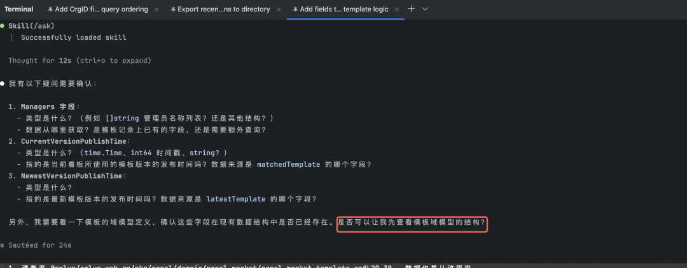
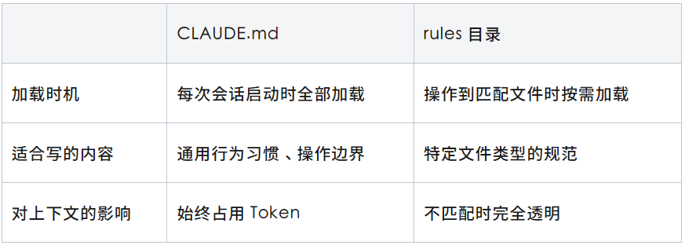
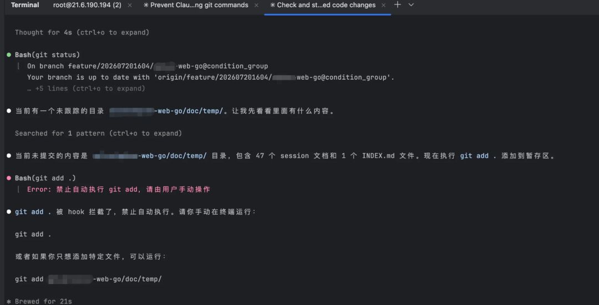
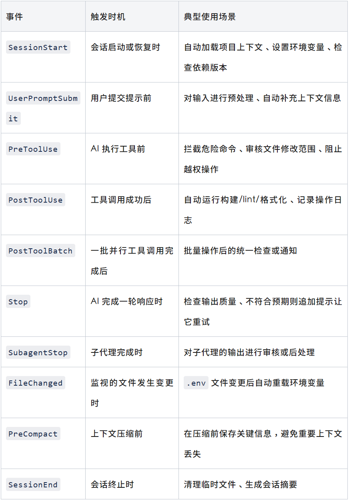
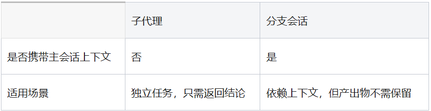
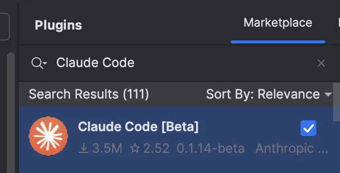
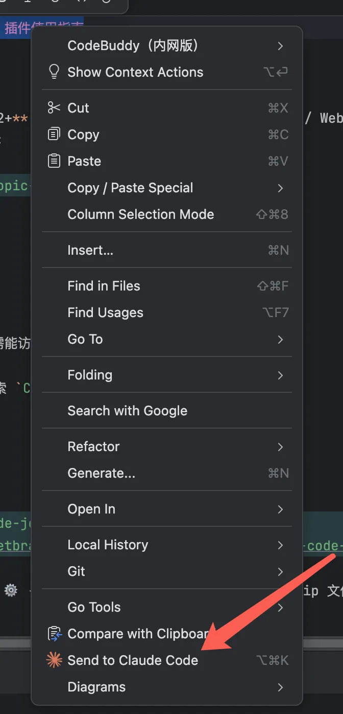

过去一年，AI 编程工具集中爆发——有的专注补全提示，帮开发者把代码写得更快；有的用对话交互驱动开发，一句话就能改代码；有的深度融入编辑器，AI 能力触手可及。这些工具都在解决同一个问题：如何降低"写代码"的门槛。 但当门槛降低之后，一个新的问题随之浮现——如何用好这些工具。工具本身的能力在那里，但体验好不好，很大程度上取决于是否掌握了正确的使用方式。 这篇文章整理了我在 Claude Code 上摸索出的一些实用技巧：如何让 AI 遵守项目规范、如何让重复操作自动执行、如何拦截危险操作、如何在长对话中保持回答质量。抛砖引玉，如有错误或疏漏，欢迎指正。
本文主要分享以下几个方面的实践：
CLAUDE.md配置：给 AI 立规矩，让它按照我们的方式工作
Hook 自动化：让重复操作强制执行，让危险操作强制拦截
子代理与分支会话：隔离不需要的上下文，保持长对话质量
Skill 的妙用：封装高频操作，减少交互轮次
Token 消耗：底层优化 + 实践技巧的综合效果
团队共享配置：搭建私有插件市场，一条命令开箱即用
目前的短板：IDE 集成和模型切换的不足
01
CLAUDE.md是 Claude Code 的持久化配置文件，写在里面的规则会在每次会话启动时自动加载，相当于给 AI 一份"入职须知"。
但这份须知里该写什么？我在外网看到不少文章建议把项目技术栈写进去——"本项目使用 Go + gRPC + PostgreSQL"之类的。实测下来发现这样做意义不大：Claude Code 在编码时会自动读取项目文件、推断技术栈和依赖关系，不需要手动告诉它。除非是从零启动一个新项目，但这种情况下在对话中说一次就够了，没有必要写到 CLAUDE.md 里长期占用上下文。
那什么才值得写？我的结论是：写那些 AI 无法从代码中自行推断、又会反复影响协作效率的规则。下面用我实际遇到的三个场景来说明。
1.1 场景一：AI 自作主张导致返工
有一次我让 Claude Code 重构某个目录下的一个模块，指定了"重写这个目录下的代码"。Claude Code 在分析过程中发现该目录下的代码依赖了另一个目录中的文件，但它认为那个文件不在我指定的范围内，就没有动它——直接按现有接口完成了重构。
结果我 Review 时才发现：那个被依赖的文件也需要一并调整，否则接口对不上。于是又要追加几轮对话让它补上，多花了时间和 Token。
当然，这里有我没说清楚的原因。但问题是：AI 在执行过程中其实已经发现了这个依赖关系，只是选择了"不确定就跳过"而不是"不确定就问我"。如果它当时停下来问一句"这个文件也需要一起改吗？"，整个任务一轮就能完成。
于是有了我的第一条规则：
当你执行一项任务发现有任何执行细节不明确时，你必须向我提问，而不是自做主张。在我回答之后仍有不明确的执行细节时，你需要向我追问，直到了解了所有细节。
1.2 场景二：AI 该看代码时反而来问我
Claude Code 启动后默认就有读取项目文件的权限，但有时候它会过于谨慎，在查看代码前先来征求意见——"我需要查看 xxx 文件来了解上下文，可以吗？"

这对我来说是不必要的打断。它本来就应该先了解上下文再做事，不用每次都请示。而且如果只有第一条规则（不确定就问），AI 有时候会问出一些通过读代码就能回答的问题——"这个函数的返回值是什么？""这个配置在哪里定义的？"。
于是有了第二条规则：
你可以在提问前查阅你需要了解的所有代码，并在了解了代码逻辑后再向我提问。这条是对第一条的补充：允许 AI 先自行查阅代码，弄清楚上下文后再提问。这样它问出来的问题是真正需要我决策的问题，而不是它自己翻翻代码就能解决的事情。
1.3 场景三：AI 执行了不该它做的操作
我参与的部分项目使用 Bazel 编译，开发环境下构建是自动进行的。但 Claude Code 不了解这个背景，经常在完成编码后自动去执行 go build 来验证代码——然而在 Bazel 环境下 go build 根本跑不通，白白浪费一轮操作。
类似的还有 .proto 文件：修改后是会自动生成对应的 Go 代码的。但如果不明确告诉 AI，它在改完 .proto 后会尝试手动修改生成的 .pb.go 文件，等于白费功夫。
于是有了第三条规则：
Proto文件（.proto）修改后，由我自行运行protoc生成Go代码。你只需要修改.proto文件本身，不需要手写或修改生成的Go代码。这类规则的核心思路是：把"人工负责的操作"明确标注出来，让 AI 知道边界在哪里。类似的场景还有很多——比如数据库迁移文件只由人工手动执行、某些配置文件需要走审批流程不能直接改、测试环境的部署由 CI 负责不需要 AI 操心。
1.4 总结：什么时候该写 CLAUDE.md
回顾这三条规则的产生过程，可以提炼出一个判断标准——当遇到以下情况时，就该把规则写进 CLAUDE.md：
AI 第二次犯同样的错误时——第一次可能是没说清楚，第二次就说明这是个需要持久化的规则
Code Review 中发现 AI 本应了解的项目规范时——比如哪些文件不该碰、哪些操作应该先问
发现自己在重复输入上次会话中说过的同样的话时——重复出现的指令就不该每次手动输入
1.5 规则的分层与渐进式加载
上面聊的是"写什么"，接下来说说"放哪里"。Claude Code 的规则体系支持多层配置，不同层级的规则在不同时机加载：
CLAUDE.md: 每次会话都加载
CLAUDE.md 支持全局和项目两级：
全局级（
~/.claude/CLAUDE.md）：所有项目共用的规则，比如"不确定就问"、"先看代码再提问"这类与具体项目无关的行为习惯项目级（项目根目录
CLAUDE.md）：只在该项目中生效的规则，比如"Proto 文件只改不生成"、"本项目使用 Bazel 构建"
通用的工作习惯配一次全局生效，项目特有的约定跟着仓库走，团队成员 clone 下来就能用。
但CLAUDE.md 有一个特点：无论当前在操作什么文件，里面的规则都会被加载到上下文中。如果规则太多，就会占用 Token 额度、稀释注意力。
rules 目录：按需加载，渐进式披露
Claude Code 提供了 .claude/rules/ 目录，支持按文件匹配模式定义规则。和 CLAUDE.md 最大的区别是：rules 不会在会话启动时全部加载，而是只在 AI 操作到匹配文件时才生效。
这就是"渐进式披露"的设计——AI 在处理 Go 测试文件时才看到测试规范，在修改迁移文件时才看到迁移规则，其余时候这些规则对上下文完全透明、不占空间。
举个例子，假设希望 AI 在修改测试文件时遵守特定的测试规范：
---paths:["*_test.go","*_test.ts"]---- 测试函数命名使用Test_功能_场景_预期结果格式- 每个测试用例必须包含setup、execute、assert三个阶段的注释分隔- mock数据统一放在testdata/目录下，不要内联
又或者，对数据库迁移文件加上保护规则：
---paths:["migrations/*.sql"]---- 不要修改已有的迁移文件，只能新增- 每个迁移文件必须包含对应的回滚语句
此外，rules 文件还可以放在任意子目录中——.claude/rules/ 下支持递归发现，可以按 frontend/、backend/、infra/ 等模块组织规则文件。在大型项目中，不同团队维护各自目录下的规则，互不干扰。
相比之下，CodeBuddy 的规则只支持一级全局配置，没有按路径匹配或按子目录组织的能力，就显得没有那么灵活。
怎么选：CLAUDE.md还是 rules？
简单总结：

规则少的时候，全放 CLAUDE.md 就够了。规则多了之后，把文件类型相关的规范迁移到 rules 目录，既能保持 CLAUDE.md 精简，又不会丢失规范覆盖。
02
上一章的 CLAUDe.md 解决的是"AI 该怎么做"的问题——通过规则告诉它行为边界。但有一类需求，光靠规则是不够的：那些必须在特定操作后立即执行的动作，以及那些绝对不能让 AI 执行的操作。
比如可以在 CLAUDE.md 里写"每次操作完成后请执行 xxx 命令"。AI 大概率会照做——但"大概率"就意味着偶尔会忘。在长对话中、在复杂任务中、在它专注于某个逻辑问题时，这类附带操作经常被跳过。发现的时候往往是服务报错、编译失败，然后又得手动补一刀。
CLAUDE.md 里的规则本质上是"建议"——AI 会尽量遵守，但不保证 100% 执行。而 Hook 是"强制"——它在系统层面监听操作事件，条件满足就自动触发，不依赖 AI 的"记性"。
这就是标题说的"从概率执行到强制执行"。
2.1场景一：文件变更后自动更新构建配置
我们项目使用 Bazel 进行编译，每次有文件新增或删除时，都需要更新各目录中的 BUILD.bazel。通常通过 gazelle 命令自动更新：
bazel run //:gazelle <project_path>在 Vibe Coding 过程中，经常改着改着就忘了执行这条命令，直到启动服务报错才发现，然后又得跑一遍命令再重新启动——费时费力。理想状态是：AI 每次新建或删除文件后，gazelle 自动跑一遍，不需要我操心。
Claude Code 的 Hook 机制可以监听工具调用事件，在特定操作发生后自动触发脚本。我的配置思路是：
监听
PostToolUse事件，匹配Write工具 → 检测文件创建监听
PostToolUse事件，匹配Bash工具 → 判断是否执行了rm操作，检测文件删除
配置如下（~/.claude/settings.json）：
{// ... 其它配置省略"hooks": {"PostToolUse": [{"matcher": "Write","hooks": [{"type": "command","command": "/root/.claude/hooks/gazelle-on-new-file.sh"}]},{"matcher": "Bash","hooks": [{"type": "command","command": "/root/.claude/hooks/gazelle-on-delete-file.sh"}]}]}}
以删除检测为例，脚本的完整逻辑如下：
# PostToolUse hook for Bash tool: run gazelle when a file is deleted under目标目录set -euo pipefail# 从 stdin 读取 Hook 传入的 JSON 数据INPUT=$(cat)# 提取执行的命令内容COMMAND=$(echo "$INPUT" | tr -d '\n' | sed -n 's/.*"command"[[:space:]]*:[[:space:]]*"\([^"]*\)".*/\1/p')if [ -z "$COMMAND" ]; thenexit 0fi# 判断命令是否包含 rm，不包含则直接跳过if ! echo "$COMMAND" | grep -q "rm"; thenexit 0fi# 判断操作目标是否在需要监听的目录下if ! echo "$COMMAND" | grep -q "<your_project_path>"; thenexit 0fi# 确认命令是针对目标目录的 rm 操作，执行 gazelle 更新 BUILD 文件echo "File deletion detected in <your_project_path>"echo "Running gazelle..."bazel run //:gazelle <your_project_path>
脚本的核心思路是两层过滤：先判断命令是否为 rm 操作，再判断目标路径是否在监听范围内——两个条件都满足才会触发 gazelle，避免了误执行。
这样一来，无论 AI 新建还是删除了文件，gazelle 都会自动执行。这件事从"AI 大概率会记得做"变成了"系统保证一定会做"。
2.2 场景二：拦截危险操作，守住安全底线
给 AI 过大的权限时，总会有一种不安全感——它会不会在我没注意的时候执行了 git push？会不会把未经 Review 的代码直接提交了？这种"无法掌控全局"的不安感，在长时间让 AI 自主工作时尤为明显。
在我的实践中，git add、git commit、git push 这类操作必须由自己来把握，绝对不能让 AI 自动执行。通过 PreToolUse Hook，可以在 AI 执行命令前拦截：
{"hooks": {"PreToolUse": [{"matcher": "Bash","hooks": [{"type": "command","if": "Bash(git add *)","command": "echo '{\"decision\":\"block\",\"reason\":\"禁止自动执行 git add，请由用户手动操作\"}'"},{"type": "command","if": "Bash(git commit *)","command": "echo '{\"decision\":\"block\",\"reason\":\"禁止自动执行 git commit，请由用户手动操作\"}'"},{"type": "command","if": "Bash(git push *)","command": "echo '{\"decision\":\"block\",\"reason\":\"禁止自动执行 git push，请由用户手动操作\"}'"}]}]}}
只要 Claude Code 尝试执行这些命令，就会被立即拦截：

和 CLAUDE.md 里写"不要执行 git 操作"相比，Hook 的拦截是确定性的——即使 AI 在复杂任务中"忘了"这条规则，系统层面也会把它挡下来。对于涉及代码安全、数据安全的操作，这种硬性保障比"AI 的自觉"可靠得多。
2.3 为什么不用 CLAUDE.md 来解决这些问题？
有人可能会问：直接在 CLAUDE.md 里写规则不就行了？
我试过，效果不稳定。原因是：
在长对话中，AI 的注意力会被当前任务占据，附带操作容易被遗忘
对于安全类规则（如禁止 git push），一次"忘记"就可能造成不可挽回的后果
CLAUDE.md 规则的执行依赖 AI 的"理解和判断"，而 Hook 的执行是确定性的——事件触发，脚本运行，没有中间商
简单总结：行为规范放 CLAUDE.md，确定性操作放 Hook。前者约束 AI "怎么思考"，后者保证"一定会做"或"一定不做"。
2.4 对比：CodeBuddy 中的实现
同样的需求，我之前在 CodeBuddy 中也尝试过，但实现得比较别扭（之后的 CodeBuddy 版本我没再试过，当时尝试时是不支持直接监听文件创建的）。
翻了一遍 CodeBuddy 的 Hook 事件列表（beforeShellExecution、afterFileEdit、afterAgentResponse 等），没有找到直接监听"文件创建"的事件。最终只能监听 afterFileEdit，再通过 git ls-files --error-unmatch 来间接判断文件是否为新增：
if git ls-files --error-unmatch "$FILE_PATH" >/dev/null 2>&1; thenecho "edit" # 文件已在 git 中 → 编辑elseecho "create" # 文件不在 git 中 → 新建# 运行 gazelle 更新 BUILD 文件gazelle ...fi
这种方式有个副作用：如果文件创建后没有 git commit，下一轮对话仍会认为它是新文件，导致 gazelle 重复执行。虽然多跑一次没有实质影响，但总归是不必要的开销。
对比下来，Claude Code 的 Hook 设计粒度更细——直接区分 Write / Bash 等工具类型，不需要绕弯子判断，实现起来更直接也更可靠。
2.5 Hook 还能做什么？
上面展示了两种典型用法：PostToolUse 实现"操作后自动触发"，PreToolUse 实现"操作前拦截"。实际上 Claude Code 的 Hook 机制覆盖了整个会话生命周期，官方支持以下事件：

每个事件都支持 matcher 字段进行精确匹配（如 PreToolUse 可以只匹配 Bash 或 Write 工具），还支持 if 字段进一步过滤（如只拦截包含 git push 的 Bash 命令）。
感兴趣的同学可以看看 官方文档，很多重复性的手动操作都可以通过 Hook 来自动化。https://code.claude.com/docs/en/hooks
03
多轮对话的会话越聊越长之后，会带来两个问题：一是 Token 消耗暴增，二是 模型的注意力被稀释。实际上，会话中很多信息只在某个节点有用，后续完全不需要——如果能主动把这些内容隔离出去，后续的对话会更聚焦。
Claude Code 提供了两种隔离方式，分别适用于不同场景。
3.1 子代理（Subagent）——只要结论，不要过程
日常开发中经常遇到这种情况：代码已经改了一半，突然发现有个地方之前没考虑到——"如果把 A 改成 B，会影响哪些模块？"我需要让 AI 帮我评估一下，但又不希望这次评估的大段分析过程留在当前会话里，影响后续的对话质量。
这类任务的特点是：它出现在会话进行中的某个时间点，我只关心最终结论，不需要评估过程留在当前会话里。
子代理天然适合这种场景：把任务丢给子代理，它在独立的上下文中完成分析，只将结论返回给主会话。评估过程留在子代理内部，主会话的上下文保持干净——后续对话不会因为这次评估而多出一大段冗余信息。
一个我用子代理解决问题的实际场景：每次写完代码想提交时，需要查看变更内容、生成 commit message——如果在主会话中做，git diff 的大段输出会留在上下文里白白占用空间。我把这个操作封装成了一个 Skill（/build-commit-msg），通过子代理在独立上下文中完成，只把最终的 commit 命令返回给主会话。具体的配置会在下一章"Skill 的妙用"中展开。
此外，子代理还有一个好处——可以使用更便宜的模型来处理简单任务。根据 官方文档（https://code.claude.com/docs/en/sub-agents） 的说明，Claude Code 的一些内置子代理本身就配置了较低成本的模型（比如 Haiku），用户也可以自定义子代理并指定模型。这意味着不是所有任务都需要用最贵的 Opus 来跑，简单的代码搜索、文档查询等操作可以自动或手动路由到更便宜的模型上，进一步节省 Token 开销。
顺带一提，CodeBuddy 也支持子代理，但插件版不支持为子代理选择其它模型（比如一些简单任务想用更便宜的模型处理，就做不到）。IDE 版支持切换模型，但整体 Token 消耗太高，让我实在没办法选择它。
3.2 分支会话（/branch）——带着上下文，用完即弃
子代理有个前提：它不会携带主会话的聊天记录。但有些任务恰恰需要前面的上下文——这时就轮到分支会话出场了。
比如每完成一个接口开发，我会让 AI 生成接口协议文档，复制到 Apifox/Postman 中测试。生成过程依赖前面的聊天记录（AI 知道接口的参数、返回值等），但生成结果不需要留在后续的会话上下文中。
这时用 /branch 开启一个分支会话——它继承了主会话的全部上下文，但后续产生的内容完全隔离。生成完接口文档后直接废弃这个分支，主会话不受任何影响。
再举一个场景：代码写到一半，想尝试一种不确定是否可行的实现方案——比如"把这段逻辑从同步改成异步，性能会不会更好？"直接在主会话中试探的风险是：如果方案不可行，试探过程中产生的大段代码和分析会污染上下文，后续回到正轨时模型可能会受到干扰。用分支会话就没有这个顾虑——开个分支，让 AI 放手去试，可行就把结论带回来，不可行直接丢弃，主会话始终保持在正确的路径上。
实际操作非常简单：
在主会话中，完成接口开发后/branch# 进入分支会话，此时拥有主会话的全部上下文请根据刚才开发的接口，生成 Apifox 格式的接口协议文档# Claude 生成文档（依赖之前的上下文，知道接口的参数、返回值等）复制文档内容到 Apifox 后，直接关闭分支会话即可主会话不受任何影响，上下文保持干净
简单总结一下两者的区分：

04
Skill 已经不是 Claude Code 的专属能力——它正在成为 AI 编程工具中 Agent 的事实标准，各家工具都在跟进类似的机制。所以这里不再赘述 Skill 的基本概念，只分享两个我常用的场景。
顺带说明一下：早期 Claude Code 中，斜杠命令（Commands）和 Skills 是两个独立组件。但在新版中，Commands 已合并到 Skills，成为 Skills 的子集。下文统一称为 Skill。
4.1 场景一：Prompt 快捷键
日常编码中有一些 prompt 会被反复使用——比如"分析当前分支的改动并输出文档"、"检查这段代码的潜在问题"、"根据变更生成 commit message"。每次手动输入这些 prompt 既费时又容易写得不一致。
把这类高频 prompt 封装成 Skill 后，只需要输入对应的斜杠命令就能触发，相当于给 prompt 绑定了一个快捷键。比如前面提到的 /build-commit-msg，完整配置如下：
---description: 查看未提交的代码变更，生成 git commit 命令disable-model-invocation: truecontext: forkagent: Explore---## 代码变更状态!`git status`## 变更内容!`git diff`## 任务根据上面的变更内容，用一句非常简短的中文总结变更摘要（不超过20个字），然后只输出以下格式的命令文本，不要输出其他任何内容：\```git add . && git commit -m "feat(xxxxx-web-go):摘要内容"\\```
几个关键配置说明：
context: fork：以子代理的方式运行，git diff的大段输出和分析过程不会污染主会话agent: Explore：使用轻量级的 Explore 代理（底层是更便宜的模型），而不是主会话的 Opusdisable-model-invocation: true：禁止模型自行调用额外工具，只做"看 diff → 输出命令"这一件事
每次输入 /build-commit-msg，子代理在独立上下文中读取变更、生成 commit 命令，只把最终的一行命令返回给主会话——既保证了 prompt 的一致性，又不污染主会话上下文。
4.2 场景二：动态注入 Bash 命令，减少交互轮次
Skill 支持在 Markdown 中通过 ! 语法内联执行 Bash 命令，命令的输出会在 Skill 加载时直接注入到上下文中。这意味着：AI 拿到 Skill 内容时，命令的执行结果已经在里面了，不需要再额外发起工具调用去获取。
举个例子。同样是"审查当前分支的最近改动"这个任务，用 Skill 有两种写法：
写法一：不用 !，只写 prompt
---description: 审查当前分支的最近改动---请查看当前分支名、最近 10 条提交记录、以及与 main 分支的 diff 统计，然后审查最近的代码改动，指出潜在问题。
这种写法下，AI 收到 Skill 后需要自行决定执行哪些命令：先调用 git branch --show-current，等结果回来，再调用 git log --oneline -10，再等结果，再调用 git diff main...HEAD --stat……每一轮工具调用都需要 AI 先"想一想要执行什么命令"，然后等结果返回，再"想一想下一步"——这些中间思考都在消耗 Token。
写法二：用 ! 直接注入结果
---description: 审查当前分支的最近改动---## 分支信息!`git branch --show-current`## 最近提交!`git log --oneline -10`## 变更内容!`git diff main...HEAD --stat`## 任务请基于以上信息，审查最近的代码改动，指出潜在问题。
这种写法下，Skill 加载时就已经执行了这三条命令，AI 拿到的是已经包含结果的完整上下文，直接进入分析阶段——省去了中间的多轮工具调用和 AI 的中间思考过程，Token 消耗和响应速度都有明显改善。
05
前面几章聊的都是使用技巧，但有一个优势是 Claude Code 在系统层面天然就做到了——Token 消耗更低。
根据 官方文档（https://code.claude.com/docs/en/costs） 的说明，Claude Code 在节省 Token 方面有这些底层设计：
自动上下文压缩（Auto-Compaction）：当会话接近上下文窗口限制时，自动对历史对话进行摘要压缩，只保留关键信息，避免冗余内容反复传递
工具层面的最小化传递：读取文件时可以指定行范围（不必读整个文件），编辑文件时只传递差异部分（old_string → new_string），而不是传整个文件内容
Prompt Caching：对于重复出现的内容（如系统提示词），自动利用缓存机制降低重复计费
这些是"开箱即用"的优化，不需要额外配置。
而前文介绍的那些实践技巧，实际上也在不同维度进一步减少了 Token 消耗——回顾一下：
换句话说，Token 节省不是靠某一个单独的技巧，而是上面这些实践叠加在 Claude Code 底层优化之上的综合效果。掌握这些使用方式后，同样的任务消耗的 Token 会明显更少，一天下来的差异是很可观的。
06
前面几章介绍的 Hook、Skill、MCP 配置，折腾完之后效果确实不错——但如果只是自己用，团队其他人还是得从零开始配一遍。有没有办法让这些配置"一条命令开箱即用"？
Claude Code 提供了插件市场机制，支持搭建私有的插件源。
6.1 如何搭建自己的私有插件市场
"市场"听起来很重，实际上就是一个普通的 Git 仓库——按照约定的目录结构组织好插件代码，推到远端就是一个可用的插件市场了。
第一步：准备一个 Git 仓库
在内网 Git 上创建一个新仓库（比如 claude-code-plugin-market），按以下结构组织代码：
市场仓库根目录/├── README.md├── .claude-plugin/│ └── marketplace.json└── plugins/└── xxxxx-plugin/├── .claude-plugin/│ └── plugin.json├── .mcp.json└── skills/├── build-commit-msg/├── pangu-create-table/└── pangu-go-ref/
核心就两层结构：市场层（marketplace.json 声明有哪些插件可装）和插件层（每个插件目录包含自己的配置、MCP、Skill）。
第二步：编写市场配置
根目录下的 .claude-plugin/marketplace.json 是市场的入口文件，声明了这个市场包含哪些可安装的插件：
{"name": "xxxxx-plugins-marketplace","version": "1.0.0","description": "xxxxx 项目私有插件市场","owner": {"name": "zanderschen","email": "zanderschen@tencent.com"},"plugins": [{"name": "xxxxx-plugin","source": "./plugins/xxxxx-plugin","description": "xxxxx 项目开发工具集：Go 分层架构规范、建表规范、commit 消息生成、测试库 MCP 连接","category": "development"}]}
plugins 数组中的每一项对应一个可安装的插件包，source 指向仓库内的插件目录路径。如果后续有多个插件（比如按项目或按团队拆分），在这里追加条目即可。
第三步：把插件内容放进去
把前面章节中配置好的 Skill、MCP、Hook 等文件放到对应的插件目录下，提交并推送到远端仓库。之后团队成员只需执行前面提到的两条命令就能一键安装。
整个过程没有额外的构建步骤，也不需要搭建服务——Git 仓库本身就是分发渠道，git pull 就是更新机制。插件市场有新内容时，成员重新 install 一次即可同步最新配置。
6.2 如何一键从插件市场安装插件
# 1. 添加插件市场源/plugin marketplace add git@git.xxx.com:xxxx/xxxxxx.git# 2. 安装插件包（包含所有 Hook、MCP、Skill）/plugin install <插件名>@<市场名>
安装完成后，以下配置会自动生效：
团队共用的 Hook 配置（gazelle 自动更新、git 操作拦截等）
常用 MCP 服务
高频 Skill（
/build-commit-msg等）
这样一来，前面几章聊到的那些实践——Hook 自动化、危险操作拦截、高频 Skill——都不需要每个人手动配一遍了。新成员安装插件包后就能直接享受到这些配置带来的便利。
07
说了这么多优点，Claude Code 也有短板。这里聊两个我实际感受到的不足。
7.1 IDE 内的交互体验
CodeBuddy 作为 IDE 原生插件，天然融入编辑器的工作流：选中代码直接对话、内联 diff 预览、一键应用修改，这些都很顺滑。而 Claude Code 本质上是个终端工具，纯命令行交互在某些场景下确实不够方便——比如想选中一段代码发给它分析，就得手动复制粘贴。
好在这个短板有补救方案。Claude Code 提供了 JetBrains 和 VS Code 的官方插件，把终端能力桥接到了 IDE 中：
安装方式（以JetBrains为例）：Settings → Plugins → 搜索 "Claude Code" → Install → 重启 IDE

安装后，右键选中代码即可看到 Send to Claude Code 选项，直接将代码片段发送到 Claude Code 的会话中。

虽然整体的 IDE 集成深度目前还不如 CodeBuddy（比如没有内联 diff 预览），但核心的"选中代码→发起对话"这条路径已经打通了，日常使用基本够用。考虑到 Claude Code 在 Hook 自动化和上下文管理上的优势，这个交互上的小妥协对我来说完全可以接受。
7.2 不支持切换其它模型
Claude Code 目前只能使用 Claude 系列模型，无法切换到其它模型——比如想用 DeepSeek 来处理某些任务就做不到。对于一些特定场景（如中文理解、特定领域的推理），其它模型可能有更好的表现，但 Claude Code 没有提供这个选择。
08
回头看这几个月的使用体验，Claude Code 对我来说最核心的改变是：让我不再把注意力花在"伺候工具"上。CLAUDE.md 和 rules 让 AI 从第一轮对话就知道该遵守什么；Hook 接管了重复性操作和安全底线，不用每次手动补刀；子代理和分支会话让上下文保持干净，长对话不再越聊越飘。
当然它也不是完美的——IDE 集成深度不如 CodeBuddy，终端交互的方式也不是所有人都习惯。但总体而言，对于我这种偏好"配置一次、后续省心"的使用习惯来说，Claude Code 确实是目前更适合我的选择。
以上是个人的使用心得，不同的项目类型和工作习惯可能会有不同的感受。希望这篇分享能给正在选择 AI 编程工具的同学提供一些参考。最后感谢公司提供了 Claude Code 的使用条件，让我可以尽情探索。
感谢你读到这里，不如关注一下？👇